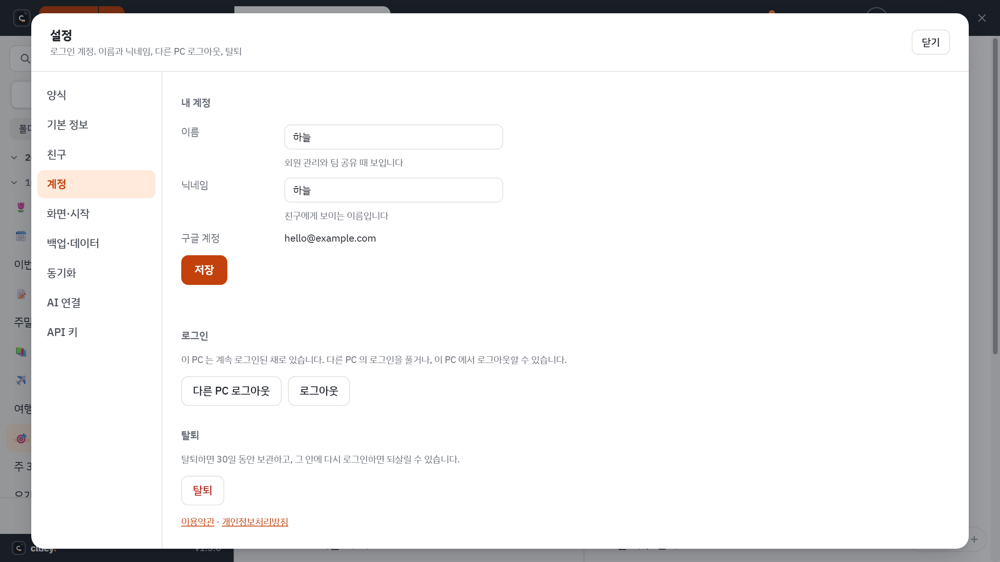

로그인은 선택입니다
로그인하지 않아도 PC 안의 기능은 모두 씁니다. 메모는 내 PC 에만 저장됩니다. 여러 PC 동기화, 친구, 메모 보내기, 공유 폴더, API 키는 로그인해야 쓸 수 있습니다.
- 설정의 계정 에서 구글로 로그인합니다. (처음 켰을 때 뜨는 안내 카드의 [구글로 로그인] 도 같습니다.)
- 처음이면 닉네임을 정하고 약관과 개인정보처리방침에 동의합니다. 구글 계정 이름이 계정의 실명으로 들어가고, 닉네임은 친구에게 보이는 이름입니다.
- 다른 PC 에서도 같은 구글 계정으로 로그인하면 메모가 내려옵니다.

무엇이 맞춰지나요
| 맞춰지는 것 | PC 마다 따로인 것 |
|---|---|
| 메모, 폴더, 양식, 자주 쓰는 장소, 메모 속 그림 | 화면 설정(테마 등), 스티커 위치, 자동 실행 |
- 인터넷이 될 때 알아서 맞춥니다. 끊겨 있으면 이 PC 에서 그대로 쓰다가, 연결되면 저절로 이어집니다.
- 두 PC 에서 같은 메모를 동시에 고치면 나중에 고친 쪽이 남고, 다른 쪽은 충돌 사본 메모로 남습니다. 아무것도 잃지 않습니다.
- 잠근 메모는 암호화된 채로 올라갑니다.
용량과 한계
- 한 사람당 1GB 입니다. 가득 차면 알려 주고, 안 쓰는 메모를 지우거나 그림을 줄이면 됩니다.
- 파일 하나(그림이 든 메모 한 개)는 25MB 까지입니다. 넘는 메모는 올리지 않고 건너뛰고, 나머지는 계속 맞춥니다.
PC 를 잃어버렸거나 로그인을 끊고 싶을 때
- 설정 > 계정의 다른 PC 로그아웃 으로 지금 PC 만 남기고 모두 끊습니다.
- 쓰지 않은 PC 는 90일 뒤 로그인이 저절로 끊깁니다. 쓸 때마다 다시 90일입니다.
구글 드라이브에서 옮겨 오기
예전에 구글 드라이브로 맞추던 분은 서버로 처음 맞출 때 드라이브의 메모가 자동으로 옮겨집니다(한 번만, 중간에 끊겨도 이어서 합니다). 드라이브 파일은 읽기만 하고 지우지 않습니다. 옮긴 지 30일이 지나면 "드라이브에 예전 사본이 남아 있습니다" 안내 카드가 뜨고, 서버와 같은 것만 골라 지울 수 있습니다. 지우지 않아도 문제는 없습니다.